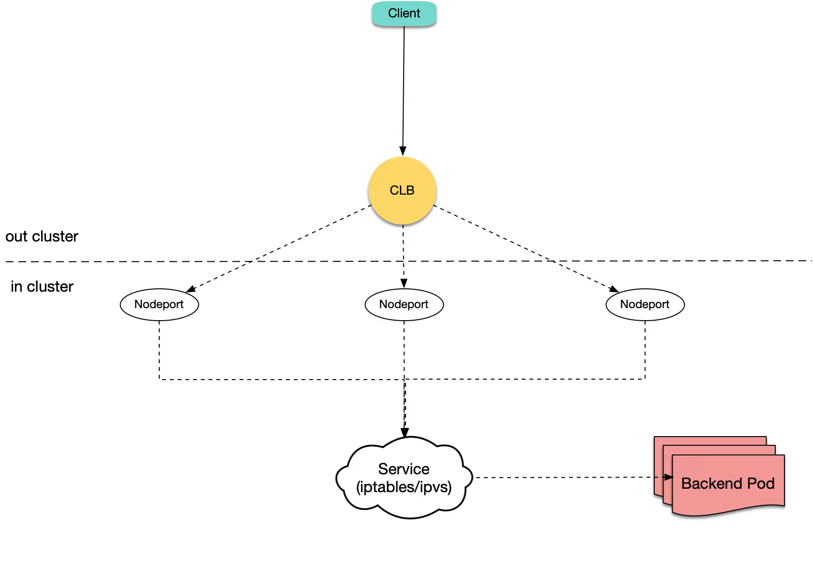
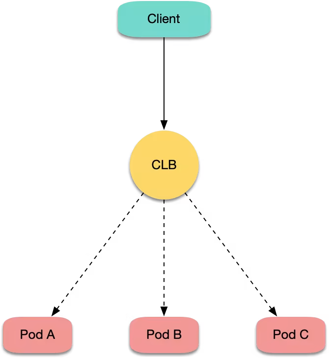

概述
- 本篇总结TKE相关知识
一 网络模式
- TKE 提供了3种网络 CNI 插件方案：VPC-CNI、Global Router 和 Cilium-Overlay，下文会详细介绍这三种网络方案。
A VPC-CNI 网络方案
- VPC-CNI 是基于腾讯云 VPC 专有网络实现的容器网络 CNI 插件，可以将 VPC 的弹性网卡直接分配给 Pod，实现 Pod 之间的互联互通。这种方案充分复用 VPC 的云上网络资源，容器与节点分布在同一网络平面，Pod IP 为集群 IPAMD 组件分配的弹性网卡 IP，由于不需要经过节点上的网桥设备，不需要使用 VxLAN 等隧道技术封装报文，在网络性能、可观测性、限流、隔离等多层面都提供更好的支持，更加适合公有云场景。
B Global Router 网络方案
Global Router 网络方案是 TKE 基于腾讯云网络全局路由能力实现的容器网络 CNI。集群会为每个节点分配一个 Pod CIDR，用于给该节点上的 Pod 分配 IP 地址，Pod CIDR 独立于 VPC CIDR，每个节点上的 Pod 具有独立且不重叠的 IP 地址。不同节点的 Pod CIDR 信息会通过全局路由方式下发到 VPC，实现跨节点 Pod 的互访。
- 该网络模式特征包含以下几点：
-
- 容器 Pod CIDR 段不占用 VPC CIDR 段，并且会预分配给节点，容器 IP 从节点预分配的 Pod CIDR 网段中获取。
-
- 容器路由会直接发布给 VPC，跨节点 Pod 之间互访直接通过全局路由转发。
-
- 无需使用 VxLan 封装报文。
C Cilium-Overlay 网络方案
由于 Cilium-Overlay 网络方案仅支持注册节点场景，当前不支持只存在云上节点场景，只有云上节点的情况请使用推荐的 VPC-CNI 网络方案。
Cilium-Overlay 网络方案是容器服务 TKE 基于 Cilium VXLan 实现的容器网络插件，实现分布式云场景中，用户云下节点添加到 TKE 集群时，云上云下 Pod 之间互通的需求。该网络模式特征如下：
云上节点和云下节点共用指定的容器网段。
容器网段分配灵活，容器 IP 段不占用 VPC 的其他网段。
使用 Cilium VXLan 隧道封装协议构建 Overlay 网络。
云上 VPC 网络和注册节点 IDC 网络通过云联网互通后，跨节点 Pod 访问原理如下图所示
二 不同Node
三 不同存储方案
| 存储类型 | 说明 | 使用方法 |
|---|---|---|
| 腾讯云硬盘（CBS） | CBS 提供数据块级别的持久性存储，通常用作需要频繁更新、细粒度更新的数据（如文件系统、数据库等）的主存储设备，具有高可用、高可靠和高性能的特点。 | TKE 支持通过创建 PV/PVC，并为工作负载挂载动（静）态数据卷的方式使用云硬盘 CBS。 |
| 腾讯云文件存储（CFS） | CFS 提供了标准的 NFS 及 CIFS/SMB 文件系统访问协议，为多个 CVM 实例或其他计算服务提供共享的数据源，支持弹性容量和性能的扩展，是一种高可用、高可靠的分布式文件系统，适合于大数据分析、媒体处理和内容管理等场景。 | TKE 支持通过创建 PV/PVC，并为工作负载挂载动（静）态数据卷的方式使用文件存储 CFS |
| 腾讯云对象存储（COS） | COS 是腾讯云提供的一种存储海量文件的分布式存储服务，通过 COS 可以进行多格式文件的上传、下载和管理。 | TKE 支持通过创建 PV/PVC，并为工作负载挂载静态数据卷的方式使用对象存储 COS。 |
| 其他类型 | 比如HostPath、配置项（ConfigMap）、密钥（Secret） | 在创建工作负载时，TKE 还支持使用以下类型的本地存储，如使用主机路径、NFS 盘、配置项（ConfigMap）、密钥（Secret）等。 |
四 最佳实践
A 在TKE上使用CLB直连Pod
1 概述
Kubernetes 官方提供了 NodePort 类型的 Service，即给所有节点开通一个相同端口用于暴露该 Service。大多云上负载均衡 （Cloud Load Balancer，CLB） 类型 Service 的传统实现也都是基于 NodePort，即 CLB 后端绑定各节点的 NodePort，CLB 接收外界流量，转发到其中一个节点的 NodePort 上，再通过 Kubernetes 内部的负载均衡，使用 iptables 或 ipvs 转发到 Pod。示意图如下：

腾讯云容器服务 TKE 默认的 CLB 类型 Service 以及默认的 Ingress 实现方式与上述方法相同。然而，TKE 目前还支持 CLB 直连 Pod 的方式，即 CLB 后端直接绑定 Pod IP + Port，不绑定节点的 NodePort。示意图如下：

2 实现方式分析
2.1 传统 NodePort 方式问题分析
通常会使用 CLB 直接绑定 NodePort 此方式来创建云上 Ingress 或 LB 类型的 Service，但此传统 NodePort 实现方式会存在以下问题：
- 流量从 CLB 转发到 NodePort 后还需进行 SNAT 再转发到 Pod，造成额外的性能损耗。
- 如果流量过于集中到某几个 NodePort 时（例如，使用 nodeSelector 部署网关到固定几台节点上），可能导致源端口耗尽或 conntrack 插入冲突。
- NodePort 本身也充当负载均衡器，CLB 绑定过多节点 NodePort 时可能导致负载均衡状态过于分散，导致全局负载不均。
2.2 CLB 直连 Pod 方式优势
使用 CLB 直连 Pod 的方式不但不会存在传统 NodePort 方式的问题，还具备以下优势：
- 由于没有 SNAT，获取源 IP 不再需要 externalTrafficPolicy: Local。
- 实现会话保持更简单，仅需让 CLB 开启会话保持即可，不需要设置 Service 的 sessionAffinity。
3 操作场景
使用 CLB 直连 Pod 通常有以下场景：
- 需在四层获取客户端真实源 IP，但不期望使用 externalTrafficPolicy: Local 的方式。
- 需进一步提升网络性能。
- 需会话保持更容易。
- 解决全局连接调度的负载不均。
4 前提条件
Kubernetes 集群版本需高于1.12。CLB 直接绑定 Pod 时检查 Pod 是否 Ready，需查看 Pod 是否 Running、是否通过 readinessProbe，及是否通过 CLB 对 Pod 的健康监测，此项依赖于 ReadinessGate 特性，该特性在 Kubernetes 1.12 开始支持。
5 操作步骤
请参见 使用 LoadBalancer 直连 Pod 模式 Service。
6 CLB自己的参数怎么控制
- 上面介绍了如何配置一个service，使得该service配套一个CLB实例, 然后集群外部(包括公网、包括vpc内)就可以通过CLB直连到Pod
- 那么问题来了? CLB本身有各种参数和规格, 我们如何在创建service时自动指定这些参数和规格呢? 指定之后就可以在创建service时、自动创建符合我们预期的CLB实例了.
- OK，解决方案就是TkeServiceConfig